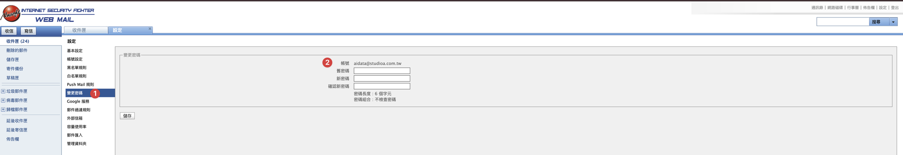

把 studioa-dashboard（部門儀表板網站＋資料庫＋門禁）從講師手上完整移交給貴公司。
全部 15 步，分五段。勾選會存在這台電腦的瀏覽器裡，關掉再打開不會不見。
這套系統的五個鎖，全長在兩個「總後台帳號」上 —— 一個 Cloudflare 帳號（網站、資料庫、門禁都掛在它底下）、 一個 GitHub 帳號（程式碼保管庫的擁有者）。 所以交接不是搬檔案，是這兩個帳號的主權移交 ＋ 換一把共用鑰匙 ＋ 講師清場。
先移名單、再換鎖。
這套系統的鑰匙 ——「讓程式讀寫資料庫」的那把 —— 就寫在程式碼裡。當初是刻意這樣設計的：13 個人各自把程式碼複製一份到自己電腦，就能直接開工，不必一個一個發鑰匙。
代價是：只要還在協作者名單上，就抓得到最新的程式碼，連同裡面最新的那把鑰匙。
所以順序反了會這樣 —— 你先撤銷了舊鑰匙、發了新的、寫進程式碼上傳，但名單還沒清。名單上的人在自己電腦按一次更新，新鑰匙就到手了。等於白換。
先把該移的人移出名單，他就抓不到新的程式碼了；這時候再換鑰匙，舊的那把才真的作廢。
同一件事的圖版：哪一根拔掉，會斷什麼。§2 移交的是上面兩個帳號，§3 換掉的是下面那把鑰匙與三份名單。
底下沒有一項是密碼。密碼由講師在交接會當場交付，不寫在任何頁面、訊息或郵件裡。
| 登入 | |
|---|---|
| 登入帳號 | aidata@studioa.com.tw
GitHub、Cloudflare、公司信箱三處同一組帳密 |
| 密碼 | 由講師於交接會當場交付 §2 第一個動作就是改掉它，所以現行密碼只需要活到你登入那一次 |
| GitHub | |
| GitHub 帳號 | aidata-studioa
登入時打的是上面那個 email，但帳號名稱是這個。§2 移交的就是這個帳號的主權 |
| 程式碼保管庫（repo） | aidata-studioa/studioa-dashboard
上面那個帳號是它的擁有者 |
| Actions secret | CLOUDFLARE_API_TOKEN
§3 換 token 之後，這裡要同步換成新的。不換，隔天起每日備份會全斷 |
| Cloudflare | |
| Cloudflare 帳號 | 同 aidata@studioa.com.tw
後台顯示的帳號名稱：Aidata@studioa.com.tw's Account |
| 網站（Pages 專案） | studioa-dashboard
網址 studioa-dashboard.pages.dev |
| 資料庫（D1） | studioa-db |
| 門禁（Zero Trust） | studioa-aidata.cloudflareaccess.com
沒登入開網站時，被導到的那個登入頁就是它 |
| API token | studioa-d1-edit
§3 要作廢重發的就是這一把——它是程式讀寫資料庫用的鑰匙 |
| 救援路徑 | |
| aidata@ 信箱 | http://studioa.com.tw:8080
兩個帳號忘記密碼時，重設信都寄到這裡 —— 所以它是最上游的一把鎖，第 03 步要第一個換掉密碼。也是所有系統警報的收件處，見「今天之後」第 ① 件 |
日後有人離職、或在後台看到不認得的帳號時，打開這張表對。總後台帳號自己也算一個，所以 GitHub 頁面上顯示「12 collaborators」、加上它就是 13。
| 儀表板上的名字 | 區域 | GitHub 帳號 |
|---|---|---|
| （總後台帳號） | 擁有者 | aidata-studioa |
| Chester | 北桃竹 | Chester-SA376 |
| Lion | 中南 | LionXiao416 |
| Bob | 北一副區 | bobbyuu |
| Yuni | 北二區 | Yuni-Wang |
| Shani | 桃竹區 | shiuan86-ai |
| Alston | 桃竹副區 | alston0913 |
| Myra | 中區 | SA986Myra |
| Neal | 中區副區 | NealSA990 |
| Weber | 南區 | Weber-Chiu |
| Abbie | 校園督導 | AbbieShih |
| Yiju | 財會 | YIJUTSAI |
| Minnie | 財會 | minnie671 |
| Felicity | 副總 | 沒有帳號 —— 後來沒有來上課，不需要加入 |
| 1 位擁有者 ＋ 12 位協作者 ＝ 13。儀表板上有 13 張學員卡（含 Felicity），所以卡片數與帳號數不會相等。 | ||
GitHub 帳號都沒有設定顯示名稱，所以在後台只看得到帳號字串 —— 這張表就是唯一的對照。 名單上出現不在這張表裡的帳號，那就是要移除的對象。（2026-09-09 實查：名單乾淨，講師的個人帳號與課堂測試帳號都不在上面。）
今天要走完的是把系統交到你手上：帳號主權、換鎖、驗收。
至於帳號要加多少層防護、密碼怎麼保管，那是公司自己的政策，不在今天的流程裡，也不需要今天決定 —— 相關的事整理在最後一段「今天之後」。
這一格要勾的是還沒定的後半：指定一位備援知情人。
只有一個人知道密碼，那個人休假或離職時，系統就沒人進得去 —— 而重設密碼的信箱也在同一套帳號體系裡，卡住會很麻煩。備援知情人不必參與今天的操作，只要知道密碼放在哪、拿得到。
彩排殘留：zzold_bob_* ×6、zzold2_bob_* ×6、zzold_ztest_weekly ×1。要到 Cloudflare 的 D1 主控台手動刪。
指令列刪不掉是刻意設計的 —— 這正是課堂教的那條界線：清垃圾由管理者到後台親手做，不交給 AI 代辦。
先換信箱，再換那兩個帳號。
aidata@ 這個信箱是最上游的一把鎖 —— GitHub 和 Cloudflare 都用它註冊，密碼忘了就從那裡寄重設連結進來。
誰收得到那個信箱的信，誰就能把那兩個帳號的密碼重設掉。
所以只改那兩個帳號、不換信箱密碼的話，講師照樣能從信箱把它們設回來 —— 等於沒交接。信箱先換，後面兩個才算數。
另外，每個帳號內部也有順序：先改密碼，再撤銷舊授權。改密碼不會讓已經發出去的指令列授權失效，撤銷授權那一步才是真的把講師電腦踢掉。
信箱：aidata@studioa.com.tw · webmail：http://studioa.com.tw:8080
登入後：設定 → 變更密碼（左側選單）。

① 左側選單的「變更密碼」 · ② 帳號欄會顯示 aidata@studioa.com.tw，確認是這個再往下填。
三個欄位由上到下：舊密碼（講師當場給）、新密碼、確認新密碼，然後按左下角「儲存」。
網址：github.com · 帳號 aidata-studioa（用 aidata@studioa.com.tw 登入，密碼講師當場給）
GitHub 密碼要求至少 15 個字元，或 8 個字元含數字與小寫。
網址：dash.cloudflare.com · 用 aidata@studioa.com.tw 登入（密碼講師當場給）
前三步都在同一個地方：右上角頭像 → My Profile → 左側 Access Management。
Wrangler 授權是 2026-08-07 建站當天留下的，有 28 個權限（涵蓋網站、資料庫、儲存空間），
而且改密碼不會讓它失效 —— 撤銷它，講師的指令列工具才真的碰不到這個帳號。
Cloudflare Access（1 個權限）—— 那是門禁系統自己的，留著不要動。
右上角的 Revoke all 也不要按，會把它一起撤掉。
這套系統刻意把資料庫的鑰匙放進程式碼裡 —— 這樣 13 個人把程式碼複製到自己電腦，就能直接開工，不用一個一個發鑰匙。
代價是：鑰匙一旦發出去就收不回來。凡是複製過這份程式碼的人，他電腦裡的歷史紀錄就永久存著那把鑰匙。刪掉他的副本沒有用（隨時能再複製一份），把他移出名單也沒有用（名單只擋未來、擋不了已經拿到的）。唯一的辦法是換一把新的、讓舊的作廢。
所以底下這一段是常規維運，不是一次性的動作 —— 日後有人離職、或懷疑鑰匙外流，跑的都是同一套流程。今天走一遍，是把這套流程交給你。
16 個 email 逐一核對。管理者自己的帳號要留著（不然自己也進不去網站）；其餘依公司決定。加或刪一行，當場生效。
dash.cloudflare.com/…/access-controls/policies先建新的、確認能用，最後才作廢舊的 —— 這樣中間不會斷線，也不會發生「新的建錯、舊的已經沒了」。
CLOUDFLARE_API_TOKEN → 鉛筆圖示 → 貼新的 → Update secret。studioa-d1-edit 撤銷。做到這一步，舊鑰匙才真的死掉。鑰匙換掉之後，13 個人電腦裡的舊鑰匙就失效了。他們要更新一次程式碼才會拿到新的 —— 但正常開工流程本來就會做這件事，所以多數人不會察覺。
發一則訊息讓大家心裡有底就好（可以直接複製）：
課堂上你的 Claude 記著「你是 Chester、只動 chester_* 的表和自己的頁」——
那個保護要留著，它擋掉的是平常餵資料時的手滑。
但管理者的事（換鑰匙、清垃圾表、改共用檔）會被同一條規則擋下來。 所以要讓它知道你有兩個身份，而不是把保護整個拿掉。
打開你的 Claude Code，跟它說（照貼就好）：
它會自己把這件事寫進 CLAUDE.local.md（一人一份、不會傳給別人）。
之後你不用每次重講一遍 —— 只要在需要的時候說一句「以管理者身分」就好。
wrangler logout）。gh auth logout）。這三件做完，講師這台電腦就跟這套系統沒有關係了 —— 但真正讓它進不來的是上面第 08 步（舊鑰匙作廢）和 §2 的撤銷授權，不是刪檔案。刪檔案是眼見為憑，作廢鑰匙才是實質。
這套系統有一條規矩：刪除只是蓋章，不是真的刪。說一句「救回來」就回來了，所以誤刪不是災難。 代價是被蓋章的資料不會自己消失 —— 久了會堆成垃圾。
所以真刪除只有一條路：管理者自己登入 Cloudflare 後台，親手打指令。
程式擋著、Claude 也不代辦（指令列打 DROP TABLE 會被系統攔下來，這是刻意的）。
這不是麻煩 —— 能把資料真的抹掉的權力，只留給坐在這個位子上的人。今天起那個人是你。
路徑：Cloudflare 後台 → 左側 Storage & databases → D1 SQLite Database → studioa-db → Console 分頁。
先跑這句看看現在還有幾張：
應該回 6 列。然後一張一張刪，指令長這樣：
跑完換下一張表名。刪一張，就在下面勾一格。
bob 不是指同事的資料。 Bob 本人真正在用的表叫 bob_stores_weekly（504 列真實門市資料），
不在這份清單裡、也不會被動到。名字前面有 zzold 的才是封存版。
原本有 16 張。2026-09-09 上午講師先清掉 10 張（更早一代的彩排表 6 張＋財會改欄位時留下的舊版表 4 張）， 留這 6 張下來當場示範。所以你看到的數字跟舊版手冊上的「13 張」對不起來是正常的。
沒被攔＝門禁沒生效。
/api/…）→ 一個數字都不吐吐得出數字＝資料是裸的，繞過網頁就拿得到。
wrangler d1 execute studioa-db --remote --command "SELECT 1"
這一招是 D2 那句「我退出的時候，帶不走任何東西」的兌現。兩邊都要拒才算數。
程式碼保管庫的 README.md ＋ CLAUDE.md ＋ D2 投影片的「異動操作」那一頁（含上面兩條直達網址）。
之後人員異動就照那一套：發三樣、收兩樣、換一把。
上面是一次性的動作，做完就過去了。這一段是常設的 —— 系統平常怎麼顧、什麼時候該找人。
備份失敗、部署失敗、用量超標，所有警報都寄到 aidata@ 那個信箱。
2026 年 8 月底，每晚備份連續斷了 8 天沒人知道 —— 不是系統沒發警報，是警報沒有收件人。 指定一個人每週看一次就夠，這是整份手冊裡最便宜、也最容易被跳過的一件事。
GitHub → repo → Actions 分頁 → 「Daily D1 export」。正常是一整排綠勾，每天一個備份檔進 exports/。
出現紅叉且連兩天沒好，就是要處理的訊號。
某個人的資料表長到上萬列之後，整站會開始變慢 —— 不只他自己的頁，連首頁卡片牆都會被拖住。
處理方式寫在 repo 的 CLAUDE.md 第 9 節：加一個「時間欄索引」再跑一次 ANALYZE。
兩件都要做 —— 只加索引不跑 ANALYZE，系統會繼續用舊的走法，等於沒加。
財會的價量頁，累計區塊旁邊有一行「累計資料建於 ⋯」。
它的意思是：時間沒動 ＝ 累計還沒跟上最新的數字。正常匯資料會自己更新；如果是手改了某一筆，就可能對不上。看到時間停在很久以前，跟資料負責人說一聲重算就好。
資料庫目前用免費方案，每天的讀取量有上限。2026 年 9 月已經逼近上限兩次， 第二次全公司當天讀不到報表。
系統這邊已經做過優化（讀取量降到十分之一左右），但資料只會越來越多。 升級到 Workers Paid（約 US$5／月）等於把這個上限拿掉，在 Cloudflare 後台 Billing 頁掛公司卡就好。 這是治本，上面的優化只是把時間買回來。
報表頁明顯變慢，而且不是單一個人的問題 —— 通常代表有人的資料量級跳了一階（例如從月報改成日報、從分類明細改成單品明細）。
想要現在做不到的東西：例如累計目前一律是「當年 1 月到這個月」， 不支援「往回推 12 個月」那種滾動式的算法。要改是可以，但那是重做一段，不是改個設定。
一年後還有一件小事：備份每天都進保管庫，一年大約長 1 GB。2027 年第一季前不用理它。
目前兩個總後台帳號都只有密碼這一道鎖。這不是設定錯誤，是還沒決定要不要加 —— 加不加是公司的政策，今天的流程用不到。
如果之後決定要加第二道（登入時多驗一次身分）：GitHub 可以用手機內建的 Face ID／指紋，或簡訊，都不必另外裝 App；Cloudflare 只支援驗證器 App 或實體金鑰，沒有簡訊這個選項。兩邊都是進各自的帳號設定頁自己開，五分鐘的事。
另外，交接當天記在記事本上的那三組密碼，記得搬進公司的密碼管理工具或鎖進保險箱，然後把記事本刪掉。三條不要破：不要用 email 或通訊軟體傳、每個帳號不要用同一組、備援知情人要拿得到。
公司信箱那組值得再看一眼：那套 webmail 只要求六個字元、也不檢查強度，但它是另外兩個帳號的救援路徑 —— 系統沒擋，不代表可以設短的。有空的話回頭把它換長一點。